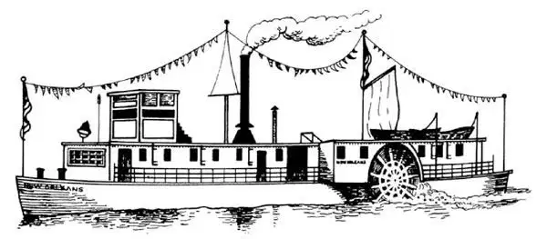
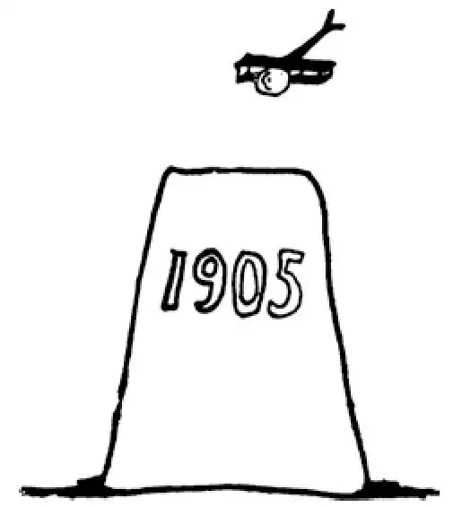

82
The Age of Miracles
产生奇迹的时代

You may think the Age of Miracles was in Biblical days.
But if a man who lived at that time should come back to earth now he would think this the Age of Miracles.
If he heard you talk on a telephone to a person thousands of miles away, or even a hundred feet away, he would think you a magician.
If you showed him people moving and talking on a movie screen or a television screen, he would think you a witch.
If he heard you start a band playing by turning on a tape player or a radio, he would think you a devil.
If he saw you fly through the air in an airplane, he would think you a god.
We are so used to the telephone, television, and tape recorders, to automobiles and huge trucks and jet planes, to electric lights and moving pictures and radios and marvelous cameras that it is hard to imagine a world in which none of these things existed—absolutely none of these things. Yet in the year 1800, not a single one of these inventions was known.
Neither George Washington nor Napoleon ever saw an airplane or an automobile. They never used a telephone or a radio or even a bicycle. They never heard of a gasoline engine or a diesel engine or an electric light. They never even imagined men walking on the moon, or close-up photographs of Mars, or television sets, or even typewriters. And as for computers and radar and X-rays—well!
More wonders have been made in the last hundred years than in all the previous centuries of the world put together.
A Scotsman named James Watt was one of the first of these magicians whom we call inventors. Watt had watched a boiling kettle on the stove and noticed that the steam lifted the lid. This gave him an idea that steam might lift other things as well as the lid of a teakettle. So he made a machine in which steam lifted a lid called a piston in such a way as to turn a wheel. This was the first steam engine.
Watt's steam engine moved wheels and other things, but it didn't move itself. An Englishman named Stephenson put Watt's engine on wheels and made the engine move its own wheels. This was the first locomotive. Soon funny-looking carriages drawn by funny-looking engines were made to run on tracks in America. At first these trains ran only a few miles out, from such cities as Baltimore and Philadelphia.
Then a young fellow named Robert Fulton thought he could make a boat go by putting Watt's engine on board and making it turn paddle wheels. People laughed at him and called the boat he was building Fulton's Folly , which means Fulton's foolishness . But the boat worked, and Fulton had the laugh on those who had laughed at him. He called his boat the Clermont , and it made regular trips up and down the Hudson River.
No one had ever before been able to talk to another far off until the telegraph was invented. The telegraph makes a clicking sound. Electricity flows through a wire from one place to another place which may be a long distance off. If you press a button at one end of the wire, you stop the electricity flowing through the wire, and the instrument at the other end makes a click. A short click is called a dot, and a long click is called a dash. These dots and dashes stand for letters of the alphabet so you can spell out a message by dots and dashes.

Riverboat with steam-driven paddle wheel （由蒸汽驱动桨轮的内河船）
A is • — dot-dash
B is — ••• dash-dot-dot-dot
E is • dot
H is •••• dot-dot-dot-dot
T is — dash
An American painter named Morse invented this wonderful little instrument. He built the first telegraph line in America between Baltimore and Washington, and this was the first message he clicked across it: “What hath God wrought!”
A schoolteacher named Bell was trying to find some way of making deaf children hear, and in doing so he invented the telephone. The telephone carries words as the telegraph carries clicks. You do not have to know a special alphabet or spell out words by dots and dashes as you do on the telegraph. With the telephone, anyone can talk from one side of the world to the other, and with ships at sea and planes in the air.
Many inventions now in everyday use have been partly invented by several people, so that it is hard to say just which one thought of the invention first. Several people thought of a way to run a machine by feeding it electricity. This was the electric motor. Then others thought of a way to run a machine by exploding gas. This was the motor used in automobiles.
Automobiles, as you know, became very popular. At first, people didn't need a license to drive and there were no traffic controls——like stop signs or traffic signals—on the streets. You can imagine some of the problems this caused. An African American named Garrett Morgan invented the three-color traffic signal and patented it in 1923. This helped make the streets safer for cars and for people walking too.
Electric lights were invented by Thomas Alva Edison. Edison was called a wizard, because in the Middle Ages, wizards were supposed to be able to do and to make all sorts of wonderful and impossible things, to turn lead into gold, to make people invisible, and that sort of thing. But Edison has done things that no wizard of a fairy tale had ever even thought of. Edison was a poor boy who sold newspapers and magazines on a train. He was interested in all sorts of experiments and fitted up a place in the baggage car where he could make experiments. But he made so much of a mess in the car that at last the baggageman kicked Edison's whole outfit off the train. Edison invented many things connected with the phonograph and the movies, and he has probably made more useful and important inventions than any other man who has ever lived, so that he is much greater than those mere kings who have done nothing but quarrel and destroy—without whom the world would have been much better off if they had never lived!
Thousands of people who lived in the past ages tried to fly and failed. Millions of people have said it was impossible to fly and foolish to try. Some have even said it was wicked to try, that God meant that only birds and angels should fly. At last, after long years of work and thousands of trials, two American brothers named Wright did the impossible. They invented the airplane and, in 1905, the plane flew 24.2 miles in 38 minutes 3 seconds!
An Italian named Marconi invented the radio, and others every day are still making wonderful inventions, but you will have to read about these yourself, for this book isn't big enough for me to tell you all about them.
Here is a good subject for an argument or debate: Are we any happier with all these inventions than people were a thousand years ago without them?
Life is faster and more exciting; but it is more difficult and more dangerous. Instead of singing or playing the violin, or piano, we turn on the stereo or the radio and miss the chief joy in music, the joy of making it ourselves. Instead of the jogging drive in an old buggy behind a horse that goes along through the countryside almost by himself, we speed on in dangerous autos, to which we must pay constant, undivided attention or be wrecked. Instead of pure air, we often have pollution.
【中文阅读】
你也许认为产生奇迹的时代是圣经里所写的时代。
但是如果生活在那个时期的人重返“现在的”地球，他一定会认为现在这个时代才是产生奇迹的时代。
如果他听到你用电话和几千英里以外或者哪怕是几百英尺以外的人说话，他会认为你是个魔法师。
如果你让他看到人们在电影里或电视屏幕上活动和说话，他会认为你是个巫师。
如果你打开磁带放送机或收音机，让他听到乐队开始演奏，他会认为你是个魔鬼。
如果他看到你坐飞机在空中飞过，他会认为你是个神。
我们习惯了电话、电视和录音机，习惯了汽车、大卡车和喷气式飞机，习惯了电灯、电影、收音机和奇妙的照相机，因此很难想象如果这些东西都不存在——没有任何一件这样的东西，世界是个什么样的。然而在公元1800年，所有这些发明还没有一样为世人所知。
无论是乔治•华盛顿还是拿破仑都从未见过飞机或汽车。他们从未用过电话、收音机甚至自行车。他们从未听说过汽油发动机或柴油机或电灯。他们甚至从未想象过人会在月球上行走，或者拍到火星的特写照片，还有电视机，甚至打字机这类东西。至于电脑、雷达和X射线——好啦！
过去一百年所创造的奇迹比以前所有世纪创造的总和还要多。
一个名叫詹姆斯•瓦特的苏格兰人是最早创造奇迹的魔法师中的一个，这些魔法师我们称为发明家。瓦特观察炉子上一只烧开的水壶，注意到壶里的蒸汽顶起了壶盖。这使他产生一个灵感，蒸汽也许可以像顶起茶壶盖那样顶起其他东西。于是他制造了台机器，机器里蒸汽顶起一个称为活塞的盖子，活塞往复运动推动轮子转动。这是第一台蒸汽发动机。
瓦特的蒸汽机推动了轮子和其他东西，但是它无法推动自身。一个名叫斯蒂芬森的英国人把瓦特的蒸汽机装上轮子，让蒸汽机推动自身的轮子。这就是第一台火 车头。不久怪模怪样的车厢由怪模怪样的发动机拉着就在美国的铁轨上跑起来了。最初这些火车只能从诸如巴尔的摩和费城这些城市跑出几英里远。
接着一个名叫罗伯特•富尔顿的年轻人认为把瓦特的发动机装在船上，让它推动桨轮，这样船就可以航行了。人们嘲笑他，把他正在造的船叫做“富尔顿的蠢物”，意指“富尔顿愚笨”。但是这条船开动了，富尔顿让那些嘲笑过他的人成了被嘲笑对象。他给他的船起名为“克莱蒙特”，克莱蒙特号船定期沿哈得孙河来回航行。
以前没有人能和远方的人对话，直到发明了电报机。电报机发出咔哒声。电流通过电线从一个地方传到另一个也许很远的地方。如果你在电线的一端按下按钮，你就阻止了电流通过电线传输，那么电线另一端的仪器就发出咔哒声。短的咔哒声叫做“点”，长的咔哒声叫做“划”。这些点和划代表了字母表中的字母，这样你可以通过点和划将一条信息全部拼写出来。
A是 •— 点-划
B是 — ••• 划-点-点-点
E是 • 点
H是 •••• 点-点-点-点
T是 — 划
一个名叫莫尔斯的美国画家发明了这个奇妙的小仪器。他在巴尔的摩和华盛顿之间建了第一条电报线，这是他咔哒咔哒通过这条电报线发送的第一条消息：“上帝的杰作！”
一个名叫贝尔的教师正试图找到某种方法让耳聋儿童听见声音，在解决这个问题的过程中，他发明了电话。电话传输语音如同电报机传输咔哒声一样。有了电话，你不必像使用电报那样知道特别的字母表或者通过点和划来拼出单词。任何人都可以用电话从世界的一边和世界的另一边通话，也可以和正在海上航行的船只，和在空中飞翔的飞机通话。
现在日常用到的许多发明，有一些是由几个人共同发明的，所以很难说是哪一个人最先想到这项发明的。有些人想出通过输入电能来开动机器的方法。这就是电动机。然后另一些人想出通过燃烧气体燃料，使其膨胀来开动机器。这就是用于汽车上的内燃机。
你知道的，汽车变得非常普及。最初，人们驾车不需要执照，道路上也没有任何交通管制——比如停车标志或红绿灯。你可以想象由此引起的一些问题。一个名叫加勒特•摩根的非洲裔美国人发明了三色交通管理灯，并于1923年取得这项发明的专利权。有了交通管理灯，街道上的车辆就可以安全行驶，行人也可以安全走路了。
电灯是托马斯•阿尔瓦•爱迪生发明的。爱迪生被称为巫师，因为在中世纪，巫师被认为无所不能，能制造出各种奇妙的和难以置信的东西，让铅变成金子，让人 隐身，以及类似的事情。但是爱迪生做的东西连童话故事里的巫师都想不到。爱迪生小时候很穷，在火车上卖报纸和杂志。他对各种实验都感兴趣，还在行李车厢里布置了一块他可以做实验的地方。但是他把车厢弄得一团糟，最后行李管理员把爱迪生的全套装备都踢出了火车。爱迪生发明了许多与留声机和电影有关的东西，他的发明既有用又重要，其数量大概超过有史以来任何一个人的发明。因此他比那些做了国王只会争斗和破坏的人要伟大多了。如果那些人从未存在过，这个世界少了他们只会更加美好。
在过去那些年代里许许多多人尝试要飞起来，都失败了。更多的人说飞起来是不可能的，只有傻子才去尝试。有些人甚至说尝试飞行是邪恶的，因为上帝只打算让鸟儿和天使飞行。最后，经过多年的努力和成百上千次的试验，两个名叫莱特的美国兄弟创造了不可思议的奇迹。他们发明了飞机，在1905年这架飞机在38分3秒内飞行了24.2英里！
一个名叫马可尼的意大利人发明了收音机，现在每天仍有一些人在构思奇特的发明创造，但是你要自己去读这方面的书了，因为我要是把所有这些发明都给你讲一讲，这本书就写不下了。
这里有个值得争论或辩论的题目：我们“有了”所有这些发明，真的比一千年前“没有”这些发明的人更幸福吗？
现在的生活节奏更快也更刺激，但是也有了更多的困难和风险。我们不再去唱歌或拉小提琴、弹钢琴，只是打开唱机或收音机，从而失去了音乐中的主要乐趣——自己演奏音乐的乐趣。我们不再坐在一辆旧马车后面，颠簸前行，任马儿自己拉着走过乡间小路，而是开着危险的汽车高速行驶，一路必须全神贯注，不能有片刻分神，否则就要出车祸。我们不再有纯净的空气，而经常面临污染。

公元1905年